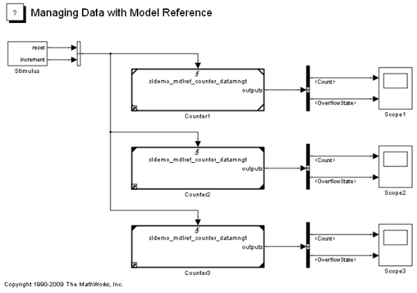
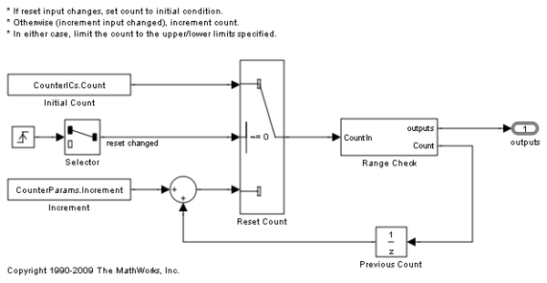
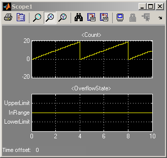
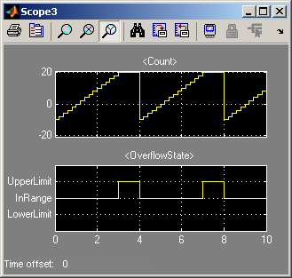
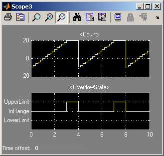

Detailed Workflow for Managing Data with Model Reference
This demo describes a number of tools and techniques that make up a workflow for managing data with model reference.
For a basic introduction to this topic, see: Introduction to Managing Data with Model Reference.
Contents
- Demo Requirements
- Open the Demo Model
- Demo Content
- Demo Outline
- Referenced Model: Setting Up Parameters
- Referenced Model: Defining the Shape of the Output Bus Signal
- Referenced Model: Setting Initial Value for Bus Output
- Referenced Model: Creating a Masked Model Block
- Top Model: Parameterizing Model Blocks
- Top Model: Scheduling Calls to the Referenced Model
- Simulating the Top Model
- Generating Code for the Top Model (Requires Real-Time Workshop)
- Controlling the Type Name for the Model Argument
- Controlling Representation of Parameters in the Top Model
- Regenerate Code for the Top Model (Requires Real-Time Workshop)
Demo Requirements
During this demo, Simulink® and Real-Time Workshop® generate code in a Simulink project directory created in the current directory. If you do not want to (or if you cannot) generate files in this directory, you should change your working directory. Real-Time Workshop is required to generate model reference binaries to be deployed in standalone applications.
If you plan to alter the demo models:
1. Preserve the demo in its original state by copying the following files from your MATLAB® installation directory, without changing their names, to a different directory:
toolbox/simulink/simdemos/simfeatures/sldemo_mdlref_datamngt.mdl toolbox/simulink/simdemos/simfeatures/sldemo_mdlref_datamngt_wsdata.m toolbox/simulink/simdemos/simfeatures/sldemo_mdlref_counter_datamngt.mdl toolbox/simulink/simdemos/simfeatures/sldemo_mdlref_counter_datamngt_lib.mdl toolbox/simulink/simdemos/simfeatures/sldemo_mdlref_counter_datamngt_types.m toolbox/simulink/simdemos/simfeatures/sldemo_mdlref_counter_datamngt_wsdata.m
2. Change your current directory to the directory to which you copied the files.
3. Continue with the demo.
Open the Demo Model
open_system('sldemo_mdlref_datamngt')
Demo Content
This demo uses a top model (sldemo_mdlref_datamngt) that contains three Model blocks: Counter1, Counter2, and Counter3. These blocks reference the same model (sldemo_mdlref_counter_datamngt).
The referenced model implements a limited counter algorithm that:
- Resets the counter if the first trigger input changes
- Increments the counter by a specified amount if the second input changes
- Saturates the counter between the specified upper and lower limits
The referenced model outputs a bus signal that contains:
- Count: the value of the counter as an 8-bit integer
- OverflowState: an enumerated value that indicates whether the counter is at the upper limit, lower limit, or in range
This model is configured to show a number of Simulink features working together:
- Tunable parameter structures: Collect variables into a MATLAB structure that parameterizes the model. In this demo, the model arguments of the referenced model are defined as parameter structures.
- Model arguments: Pass different parameter values to each model reference instance.
- Bus objects: Define the "shape" of structures for signals and parameters used in the model reference interface. Define type name for structure parameters and signals in generated code.
- Simulink.Bus.createMATLABStruct: Static method for creating a MATLAB structure that matches the shape of the bus object.
- Bus initialization: Uses a parameter structure to initialize bus signals and states.
- Masked Model block: Creates a customized interface for a model reference block.
- Triggered model reference: Explicit control over scheduling of components.
This demo also uses other features that are useful for managing data in Simulink:
- Simulink.saveVars: Serialize workspace variables to a MATLAB script. Supports incremental modification, data differencing, and version control.
- Simulink.findVars: Discover how workspace variables are used by a model.
Demo Outline
The sequence of steps in the demo is as follows:
1. Prepare the referenced model (sldemo_mdlref_counter_datamngt) to use structures for the signals and parameters in its external interface.
2. Prepare the top model (sldemo_mdlref_datamngt) to call the referenced model.
3. Simulate the top model and examine the results.
4. Generate code to create a standalone executable for the top model.
Referenced Model: Setting Up Parameters
The referenced model has two model arguments (CounterParams, CounterICs) that parameterize the blocks in the model. Model arguments provide different parameter values to each instance of a referenced model. In this model, the arguments are defined as parameter structures to reduce the number of arguments being passed to the referenced model.
The process for defining the model arguments is as follows:
1. Open the referenced model (sldemo_mdlref_counter_datamngt).
2. Define MATLAB structures to parameterize the referenced model.
CounterParams.Increment = int8(1); CounterParams.LowerLimit = int8(-10); CounterParams.UpperLimit = int8(10);
CounterICs.Count = int8(0); CounterICs.OverflowState = SlDemoRangeCheck.InRange;
NOTE: This demo uses an 8-bit integer for the counter, so the numeric fields also use 8-bit integers.
3. Use the MATLAB structures as model arguments.
Model arguments are defined as variables in the model workspace of a referenced model. You can use the Model Explorer to view and edit the contents of the model workspace.

You can initialize the model workspace from a number of different data sources. This demo uses a MATLAB script (sldemo_mdlref_counter_datamngt_wsdata) to create the parameter structures to define the model arguments. Using a MATLAB script makes it easy to create and modify the parameter structure outside the model. It also facilitates incremental changes, version control, and data differencing.
You can create the MATLAB script manually, or use Simulink.saveVars:
Simulink.saveVars('sldemo_mdlref_counter_datamngt_wsdata.m', 'CounterParams', 'CounterICs');Set the workspace's Data source to create the MATLAB structure in the model workspace and enter the variable name (CounterParams) into the Model arguments field in the model workspace's dialog box.

Alternatively, you can configure the model workspace from the MATLAB command line:
hWS = get_param('sldemo_mdlref_counter_datamngt', 'ModelWorkspace');
hWS.DataSource = 'MATLAB Code';
hWS.MATLABCode = 'sldemo_mdlref_counter_datamngt_wsdata';
hWS.reload;
set_param('sldemo_mdlref_counter_datamngt', ...
'ParameterArgumentNames', 'CounterParams,CounterICs');4. Explore how the referenced model uses the model arguments.
A number of blocks in the referenced model use the model arguments:
- A Constant block specifies the increment amount (CounterParams.Increment).
- Various blocks inside the "Range Check" subsystem use the values of the lower and upper limits (CounterParams.LowerLimit and CounterParams.UpperLimit).
- Various blocks use the initial condition of the counter (CounterICs.Count).
- The root Outport block uses the initial condition structure (CounterICs) to initialize the system output prior to execution.
You can use Simulink.findVars to discover the blocks that use the model argument.
paramInfo = Simulink.findVars('sldemo_mdlref_counter_datamngt', ...
'Name', 'CounterParams');
icInfo = Simulink.findVars('sldemo_mdlref_counter_datamngt', ...
'SearchMethod', 'cached', ...
'Name', 'CounterICs');
paramBlks = paramInfo.UsedByBlocks
icBlks = icInfo.UsedByBlocks
paramBlks =
'sldemo_mdlref_counter_datamngt/Increment'
'sldemo_mdlref_counter_datamngt/Range Check/Detect Overflow'
'sldemo_mdlref_counter_datamngt/Range Check/Saturate Count'
icBlks =
'sldemo_mdlref_counter_datamngt/Initial Count'
'sldemo_mdlref_counter_datamngt/Previous Count'
'sldemo_mdlref_counter_datamngt/outputs'
NOTE: Once you have compiled the model, you can use Simulink.findVars to retrieve the 'cached' variable usage information.
Referenced Model: Defining the Shape of the Output Bus Signal
The referenced model produces two results and packages them into a bus signal:
- Count: the value of the counter as an 8-bit integer
- OverflowState: an enumerated value that indicates whether the counter is at the upper limit, lower limit, or in range
To define the bus type for the root output of the referenced model:
1. Use the Bus Editor to define the bus object (OutputType).

Alternatively, you can create the bus object at the MATLAB command line:
OutputType = Simulink.Bus; OutputType.Elements = Simulink.BusElement; OutputType.Elements(1).Name = 'Count'; OutputType.Elements(1).DataType = 'int8'; OutputType.Elements(2) = Simulink.BusElement; OutputType.Elements(2).Name = 'OverflowState'; OutputType.Elements(2).DataType = 'Enum: SlDemoRangeCheck';
2. Configure the root outport of the referenced model to output a nonvirtual bus signal based on this bus object (OutputType).

Alternatively, you can set the block parameters from the MATLAB command line:
set_param('sldemo_mdlref_counter_datamngt/outputs', ...
'UseBusObject', 'on', ...
'BusObject', 'OutputType', ...
'BusOutputAsStruct', 'on');3. Create a MATLAB script to recreate this bus object.
This demo uses a MATLAB script (sldemo_mdlref_datamngt_types) to recreate the bus objects used by the referenced model.
You can create this MATLAB script manually, or use Simulink.saveVars:
Simulink.saveVars('sldemo_mdlref_counter_datamngt_types.m', 'OutputType');4. Configure the referenced model to create the global data that it uses.
It is common practice for a model to recreate all of the global data and types that it uses. In this demo, the referenced model's PreLoadFcn is used to execute the MATLAB script that creates the bus objects for the referenced model. The referenced model does not use any other global variables.
To set the model's PreLoadFcn, open the Model Properties dialog box from the model's File menu or set it from the MATLAB command line.
set_param('sldemo_mdlref_counter_datamngt', ...
'PreLoadFcn', 'sldemo_mdlref_counter_datamngt_types');5. Explore how the bus type is used in the model hierarchy.
This bus type forms part of the interface for the referenced model and is referred to by blocks in both the top and referenced models. Use find_mdlrefs and Simulink.findVars to find out about all the places where this bus object is used in the model reference hierarchy.
models = find_mdlrefs('sldemo_mdlref_datamngt');
open_system(models);
varInfo = Simulink.findVars(models, 'Name', 'OutputType');
blks = vars.UsedByBlocks
models =
'sldemo_mdlref_counter_datamngt'
'sldemo_mdlref_datamngt'
blks =
'sldemo_mdlref_counter_datamngt/Initial Count'
'sldemo_mdlref_counter_datamngt/Previous Count'
'sldemo_mdlref_counter_datamngt/Range Check/Bus Creator'
'sldemo_mdlref_counter_datamngt/outputs'
'sldemo_mdlref_datamngt/Counter1'
'sldemo_mdlref_datamngt/Counter2'
'sldemo_mdlref_datamngt/Counter3'
Referenced Model: Setting Initial Value for Bus Output
In general, the initial values for bus signals and states can be specified as '0', in which case all of the elements of the bus will be initialized to zero (or the relevant ground value). However, in certain cases, it is desirable to specify nonzero initial values for bus signals and states. In this demo, the initial condition of the counter is tunable, so the initial value of output signal must be set consistently.
To specify the initial value of the output of the referenced model:
1. Create a parameter structure that is compatible with the bus signal that you want to initialize. One of the model arguments (CounterICs) is a parameter structure that matches the shape of the output signal. This structure was defined as follows:
CounterICs.Count = int8(0); CounterICs.OverflowState = SlDemoRangeCheck.InRange;
Alternatively, you could have used the static method, Simulink.Bus.createMATLABStruct to create the structure using the ground value of the OutputType.
CounterICs = Simulink.Bus.createMATLABStruct('OutputType');2. Open the dialog box for the root outport and enter the name of the structure (CounterICs) into the Initial output field.

Alternatively, you can set the block parameters from the MATLAB command line:
set_param('sldemo_mdlref_counter_datamngt/outputs', ...
'InitialOutput', 'CounterICs');NOTE: In general, when initializing a bus signal or state, the parameter structure does not need to match the bus type exactly, but its fields must be a subset of the elements in the bus object and the attributes of these fields must match the elements in the bus object.
Referenced Model: Creating a Masked Model Block
It is often useful to mask Model blocks to customize the user interface. This demo creates a mask with a single mask parameter, for the model argument of the underlying Model block. To facilitate reuse, you can put the masked Model block into a library and define the mask on the library block.
Open the library to see the masked Model block (sldemo_mdlref_counter_datamngt_lib).
Top Model: Parameterizing Model Blocks
The referenced model is configured to accept a structure for its model argument. This demo calls each instance of the referenced model with different parameter values.
1. Open the top model (sldemo_mdlref_datamngt).
2. Create parameter structures with the same "shape" as the model arguments defined in the referenced model.
Param1.Increment = int8(1); Param1.LowerLimit = int8(-20); Param1.UpperLimit = int8(20);
Param2 = Param1; Param2.Increment = int8(2);
IC1.Count = int8(0); IC1.OverflowState = SlDemoRangeCheck.InRange;
IC2 = IC1; IC2.Count = int8(-10);
3. Set the mask parameters on the masked Model blocks to use these parameters.
For example, the parameters of the first Model block ('sldemo_mdlref_datamngt/Counter1') are set as:
- Param1 for the Counter parameters
- IC1 for the Initial conditions

Alternatively, you can set the block parameters from the MATLAB command line:
set_param('sldemo_mdlref_datamngt/Counter1', ...
'Params', 'Param1', ...
'ICs', 'IC1');3. Create a MATLAB script to recreate these workspace variables.
This demo uses a MATLAB script (sldemo_mdlref_datamngt_wsdata) to recreate these workspace variables.
You can create this MATLAB script manually, or use Simulink.saveVars:
Simulink.saveVars('sldemo_mdlref_datamngt_wsdata.m', 'Param*');4. Configure the top model to create all global variables.
It is good practice for the top model to recreate all of the global data and types used throughout the model reference hierarchy. This configuration avoids loading referenced models when simulating the top model.
In this demo, the top model's PreLoadFcn is used to execute the MATLAB scripts that create the workspace data for the top model and the types for the referenced model. The referenced model does not use any global data.
set_param('sldemo_mdlref_datamngt', ...
'PreLoadFcn', ['sldemo_mdlref_datamngt_wsdata; ', ...
'sldemo_mdlref_counter_datamngt_types']);Top Model: Scheduling Calls to the Referenced Model
As mentioned earlier, the referenced model implements a limited counter algorithm with two trigger inputs. The algorithm detects "rising edges" in the trigger inputs and reacts as follows:
- Resets the counter if the first trigger input changes.
- Increments the counter by a specified amount if the second input changes.
In this demo, you drive all three instances of the counter algorithm with the same trigger inputs, generated by the Stimulus subsystem. The period and sample time of the trigger inputs are defined by the values entered for the mask parameters of the Stimulus subsystem:
- Reset counter every 4 seconds.
- Increment counter 5 times per second (period = 0.2 second).
- Sample time is 0.1 second.
NOTE: Reset and increment periods must be at least 2 times the sample time.
Simulating the Top Model
1. Save or close the referenced model.
You need to save the referenced model before it can be used by the top model. Alternatively, you can close the referenced model and use the original version of the model provided with this demo.
2. Simulate the top model by selecting Start from the Simulation menu or by typing Ctrl+T.
NOTE: Simulating the top model automatically generates a simulation target for the referenced model.
3. Review the simulation results as displayed by the Scope blocks.
 
 Generating Code for the Top Model (Requires Real-Time Workshop)
Generate code and build a standalone executable for the top model by selecting Real-Time Workshop > Build Model from the Tools menu or by typing Ctrl+B.
rtwbuild('sldemo_mdlref_datamngt')
NOTE: When you generate code for the top model, Real-Time Workshop automatically generates code for the referenced model. Use Real-Time Workshop® Embedded Coder™ to generate embedded code for production deployment.
Controlling the Type Name for the Model Argument
By default, Real-Time Workshop generates an automatic name for the type of the parameter structures. This name is unique and deterministic, but not easy to recognize. You can control this type name by using Simulink.Parameter objects to define the parameter structures and Simulink.Bus objects to define the type.
1. Define the bus type for the model argument by using the Bus Editor or by typing the following commands at the MATLAB command line:
CounterParamType = Simulink.Bus; CounterParamType.Elements = Simulink.BusElement; CounterParamType.Elements(1).Name = 'Increment'; CounterParamType.Elements(1).DataType = 'int8'; CounterParamType.Elements(2) = Simulink.BusElement; CounterParamType.Elements(2).Name = 'LowerLimit'; CounterParamType.Elements(2).DataType = 'int8'; CounterParamType.Elements(3) = Simulink.BusElement; CounterParamType.Elements(3).Name = 'UpperLimit'; CounterParamType.Elements(3).DataType = 'int8';
2. Modify the existing MATLAB script to recreate this bus object.
This bus type must be defined in the base workspace, along with the bus type for the referenced model's output. You can manually modify the MATLAB script that defines the types for the referenced model or use Simulink.saveVars to append this variable to the existing MATLAB script.
Simulink.saveVars('sldemo_mdlref_counter_datamngt_types.m', 'CounterParamType', '-append');3. Create Simulink.Parameters to define the model arguments.
To associate the bus types with the model arguments, you must use Simulink.Parameter objects in place of the MATLAB structures in the model workspace of the referenced model.
CounterParams = Simulink.Parameter; CounterParams.Value.Increment = 1; CounterParams.Value.LowerLimit = -10; CounterParams.Value.UpperLimit = 10; CounterParams.DataType = 'Bus: CounterParamType';
CounterICs = Simulink.Parameter; CounterICs.Value.Count = 0; CounterICs.Value.OverflowState = SlDemoRangeCheck.InRange; CounterICs.DataType = 'Bus: OutputType';
NOTE: When you set the data type of a parameter object to be a bus, you can use double-precision values for the numeric fields of the parameter structure. Simulink converts these double-precision values to the appropriate numeric data type during model compilation.
You can manually modify the MATLAB script that defines the model argument or use Simulink.saveVars to update the existing MATLAB script.
Simulink.saveVars('sldemo_mdlref_counter_datamngt_wsdata.m', '-update');NOTE: When you use the -update option, you do not need to specify the variables to be written out because Simulink.saveVars writes out only the values of variables already defined in the MATLAB script.
5. Reload the contents of the model workspace.
You have modified the data source that is used by the referenced model's workspace. If this model is open, you must reload the contents of the model workspace.
You can reload by using the model workspace's dialog box or at the MATLAB command line.
hWS = get_param('sldemo_mdlref_counter_datamngt', 'ModelWorkspace');
hWS.reload;Controlling Representation of Parameters in the Top Model
You can use a similar approach to convert the parameter structures in the top model to use Simulink.Parameter objects. This configuration gives you control over the type name and enables you to control how these parameters appear in the generated code.
1. Create Simulink.Parameter objects with the ExportedGlobal storage class to define the parameter structures for the top model as a exported, tunable variables in the generated code.
Param1 = Simulink.Parameter; Param1.Value.Increment = 1; Param1.Value.LowerLimit = -10; Param1.Value.UpperLimit = 10; Param1.DataType = 'Bus: CounterParamType'; Param1.RTWInfo.StorageClass = 'ExportedGlobal';
Param2 = Param1.deepCopy; Param2.Value.Increment = 2;
IC1 = Simulink.Parameter; IC1.Value.Count = 0; IC1.Value.OverflowState = SlDemoRangeCheck.InRange; IC1.DataType = 'Bus: OutputType'; IC1.RTWInfo.StorageClass = 'ExportedGlobal';
IC2 = IC1.deepCopy; IC2.Value.Count = -10;
2. Modify the existing MATLAB script to recreate these workspace variables.
You can manually modify the MATLAB script that defines the parameters for the top model or use Simulink.saveVars to update the existing MATLAB script.
Simulink.saveVars('sldemo_mdlref_datamngt_wsdata.m', '-update');NOTE: When you use the -update option, you do not need to specify the variables to be written out because Simulink.saveVars writes out only the values of variables already defined in the MATLAB script.
Regenerate Code for the Top Model (Requires Real-Time Workshop)
Generate code and build a standalone executable for the top model by selecting Real-Time Workshop > Build Model from the Tools menu or by typing Ctrl+B.